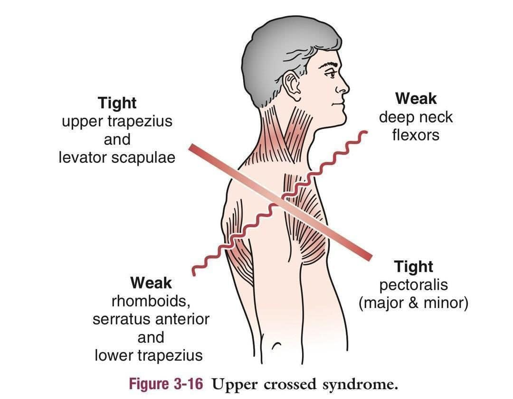

#產後臉浮腫
#產後臉浮腫
產後一個月的媽媽，臉部浮腫，程度右臉明顯多於左臉，右眼瞼略下垂，肉眼可見左右臉不對稱。
產後水腫，是很常見也可預期產後現象，通常只要是當休養都能快速恢復，但通常是全身性、對稱性的表現。
單側浮腫，多半有筋膜、肌肉等軟組織結構的問題參與其中。
通訊器材普及，生活步調緊湊，駝背圓肩、烏龜頸的體態比比皆是，#僵硬肩頸 也是常見的體態標配。
僵硬的肩頸，限制了肩膀、頸椎與枕骨的連動，除了會造成常見軟組織痠痛、疼痛外，也會影響臉面部的體液循環流動效率，這位產後媽媽的右臉浮腫，就是因此而來。
回歸結構該有的排列，臉面部的體液流動就能恢復正常，也就不會讓臉部浮腫了。
透過 #徒手技巧 針對肩膀、高位頸椎與枕骨相關結構的拆解，恢復了顱頸該有的柔韌度，當下臉頰的浮腫就消退了，該有的尖下巴也就跑回來了！
（拿著鏡子）：「誒！有欸～～～」
「按摩師傅都說我肩頸很硬，每次去按摩，我都會很痛。但醫師我覺得你也沒對我做什麼，我也沒感覺不舒服，怎麼起身後，整個脖子就鬆開了！」
「我有感受到脖子的深層裡面鬆開了！」
後續再搭配中醫中藥客製的產後處方，輔助產後氣血修復，相信這位媽媽一定能在短時間內，恢復到最佳狀態！
太初中醫診所
中醫師 黃彥鈞
